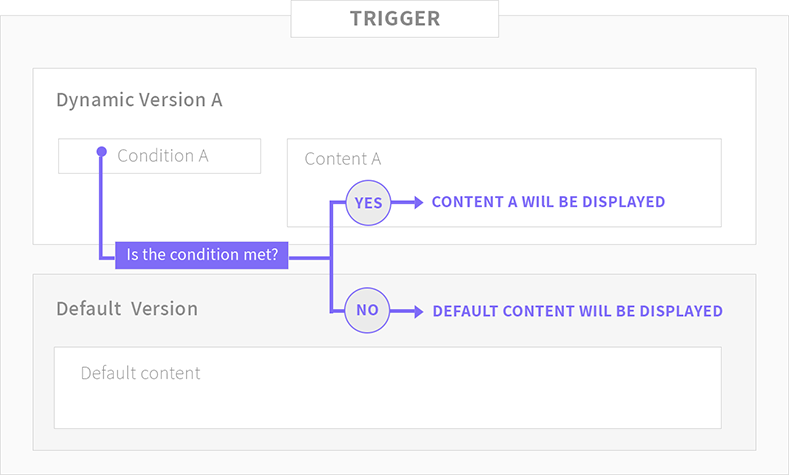
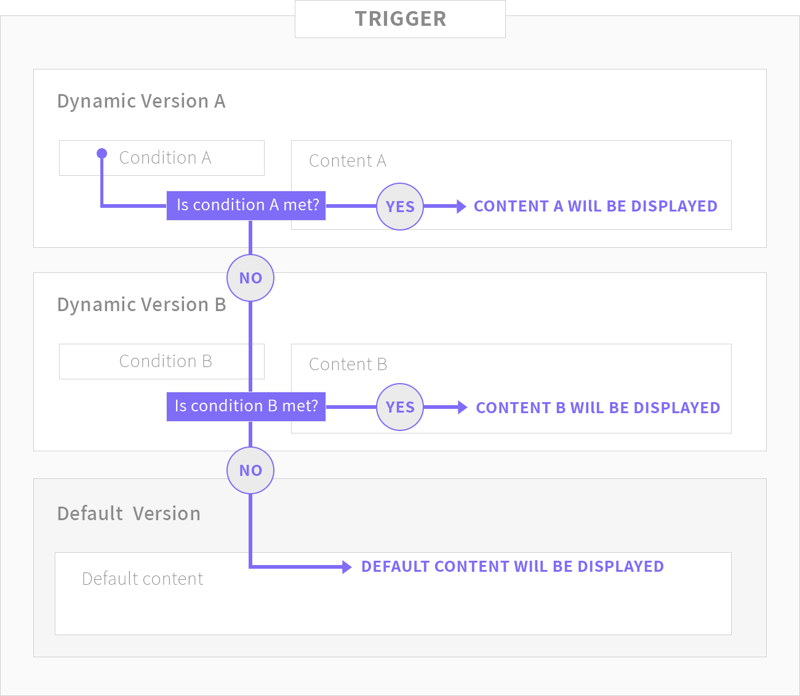
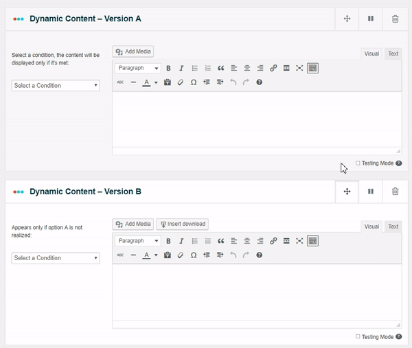

If-So lets you create different versions of elements on your website. Each version is comprised of a condition and corresponding content. If the condition is met, the version’s content will be displayed. If the condition is not met, If-So will check the condition of the next dynamic content version. If none of the conditions are met, the default version will be displayed.
A basic unit of dynamic versions and a default version is called a “Trigger”. Each trigger has a shortcode that you can paste anywhere on your website. Every time a page with a shortcode is rendered, If-So checks the conditions and displays content accordingly.
The following chart illustrates a basic trigger with one dynamic version:

There is no limit to the number of dynamic versions you can create within each trigger.
If you choose to create a trigger with more than one version, the condition of the first version (Version A) will be checked first. If the condition is met, Version A will be displayed. If the condition is not met, the condition of Version B will be checked, and so on. If none of the conditions are met, the default version will be displayed.
The following chart illustrates a trigger with 2 dynamic versions. You can set as many versions as required:

While creating or editing a trigger, you may want to change the order of reorder the different versions. To do so, use the drag button which is located on on the top right corner of the version. Click and hold the button, and drag it vertically to place it in the desired location.
